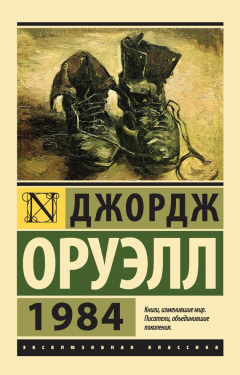
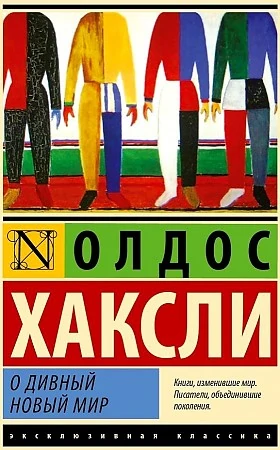
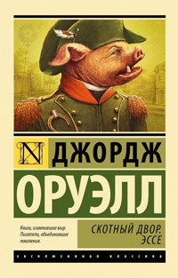

Связаться с нами
Подпишись на нас
Проект «ВСЕЗНАЙ» – это книги о политике, истории и экономике, о философии и психологии, о развитии личности и здоровом образе жизни. Мы предлагаем фундаментальные знания и редкую информацию, которые помогают формировать мышление, видеть исторические закономерности, понимать суть происходящих вокруг процессов, воспитывать себя и своих детей, противостоять информационной пропаганде и жить осознанно.
1984Своеобразный антипод второй великой антиутопии XX века - "О дивный новый мир" Олдоса Хаксли. Что, в сущности, страшнее: доведенное до абсурда "общество потребления" - или доведенное до абсолюта "общество идеи"? По Оруэллу, нет и не может быть ничего ужаснее тотальной несвободы... О дивный новый мирАнтиутопический сатирический роман английского писателя Олдоса Хаксли, опубликованный в 1932 году. Действие романа разворачивается в Лондоне далёкого будущего (в 26 веке нашей эры, а именно в 2540 году[4]. Люди на всей Земле живут в едином «прогрессирующем» государстве, где возведены в основу следующие ценности: беззаботность (работа не принята во внимание по причине естественного желания ей заниматься), сексуальная свобода и потребление. Отсчитывается новое летоисчисление — Эра Т — с появления Форда Т. Потребление возведено в культ, символом потребительского бога выступает Генри Форд, а вместо крестного знамения люди «осеняют себя знаком Т». |
451° по ФаренгейтуМастер мирового масштаба, совмещающий в литературе несовместимое. Создатель таких ярчайших шедевров, как "Марсианские хроники", "451° по Фаренгейту", "Вино из одуванчиков" и так далее и так далее. Лауреат многочисленных премий. Это Рэй Брэдбери. Его увлекательные истории прославили автора не только как непревзойденного рассказчика, но и как философа, мыслителя и психолога. Магический реализм его прозы, рукотворные механизмы радости, переносящие человека из настоящего в волшебные миры детства, чудо приобщения к великой тайне Литературы, щедро раздариваемое читателю, давно вывели Брэдбери на высокую классическую орбиту. Собранные в этой книге произведения - достойное тому подтверждение. Скотный дворВ повести изображена эволюция общества животных, изгнавших со скотного двора (первоначально называвшегося ферма «Усадьба» или в других переводах — «Господский двор», «Райский уголок») его предыдущего владельца, жестокого мистера Джонса, от безграничной свободы к диктатуре свиньи по кличке Наполеон. В повести Оруэлл показал перерождение революционных принципов и программ, то есть постепенный переход от идей всеобщего равенства и построения утопии к диктатуре и тоталитаризму. По мнению А. Бартова, «Скотный двор» — притча, аллегория на революцию 1917 года и последующие события в России. |
Подпишись на нас